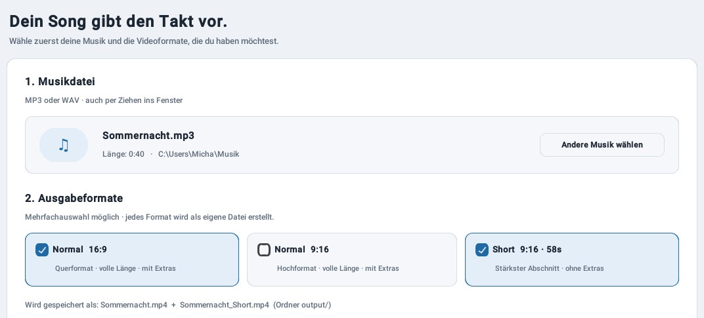
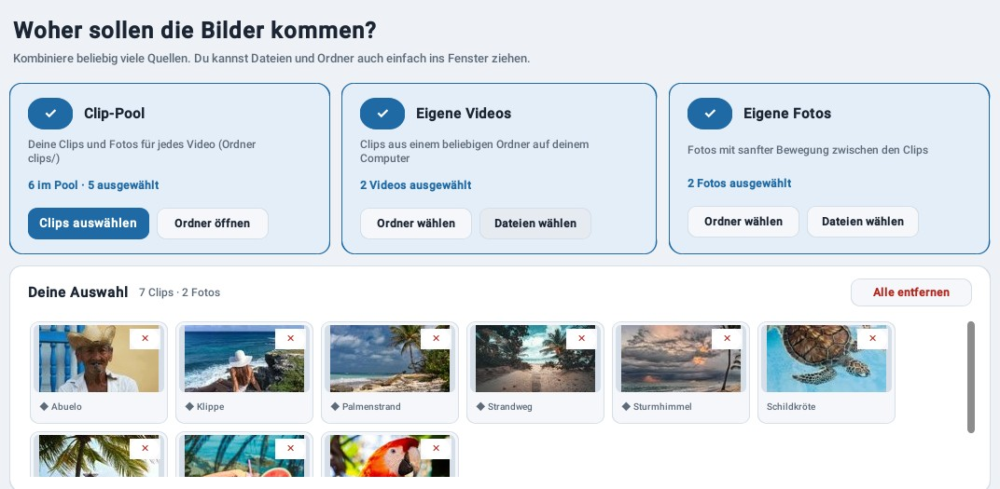
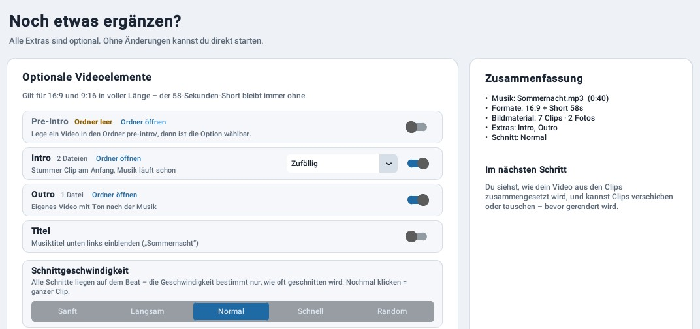
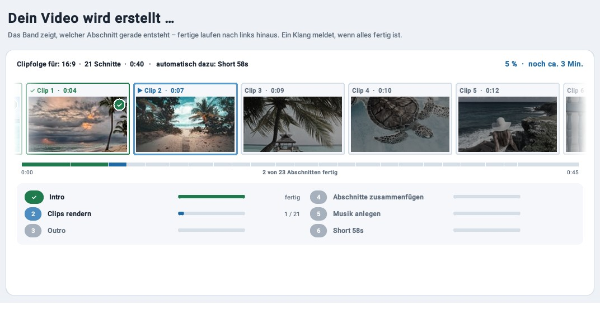
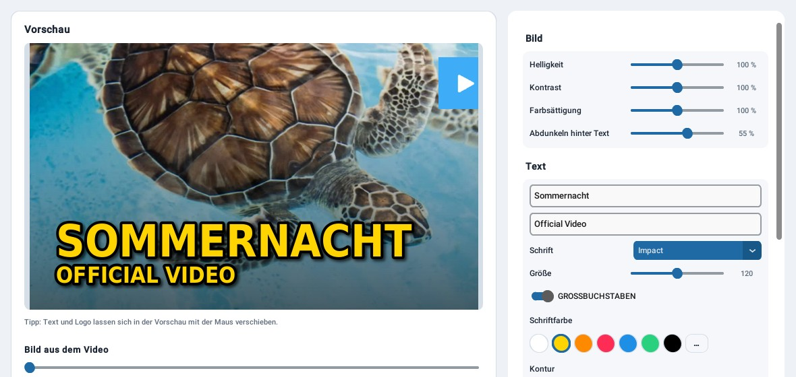

1Start
Dein Song gibt den Takt vor
Musikdatei wählen oder einfach ins Fenster ziehen. Dazu die Formate: das klassische 16:9-Video, das Hochformat 9:16 und den 58-Sekunden-Short – gern alle auf einmal.

Du bringst den Song und deine Clips mit. Der Musik Video Generator hört sich die Musik an und setzt jeden Schnitt genau auf den Beat – in fünf Schritten zum fertigen Video.
Musikdatei wählen oder einfach ins Fenster ziehen. Dazu die Formate: das klassische 16:9-Video, das Hochformat 9:16 und den 58-Sekunden-Short – gern alle auf einmal.

Aus deinem Clip-Pool, aus beliebigen Ordnern oder per Ziehen ins Fenster. Alles landet in einer gemeinsamen Auswahl. Nur ein Clip dabei? Dann wird daraus ein Loop im Takt.

Optional ein Pre-Intro, Intro, Outro und der Songtitel. Die Schnittgeschwindigkeit reicht von sanft bis schnell – oder du lässt jeden Clip ganz durchlaufen.

Die geplante Clipfolge erscheint als Kacheln. Verschieben, tauschen, fertig. Beim Rendern siehst du live, welcher Abschnitt gerade entsteht – und wie lange es noch dauert.

Das YouTube-Thumbnail liegt schon im Output-Ordner. Wer mag, gestaltet es im Editor mit Text, Schrift, Farben und eigenem Logo. Einzelne Clips lassen sich nachträglich ändern.

Kostenlos und ohne Installation: ZIP herunterladen, entpacken, MVG.exe starten. Die Anleitung in Deutsch, English und Español ist eingebaut.
clips/